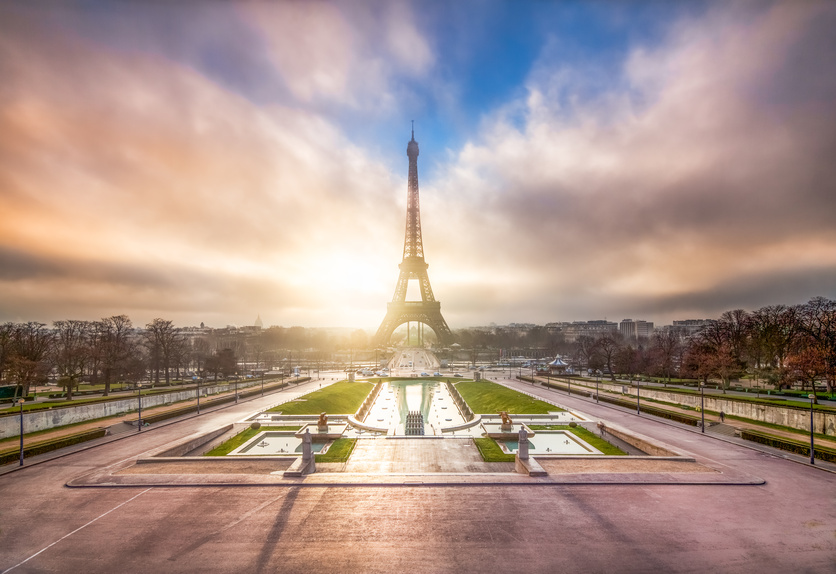
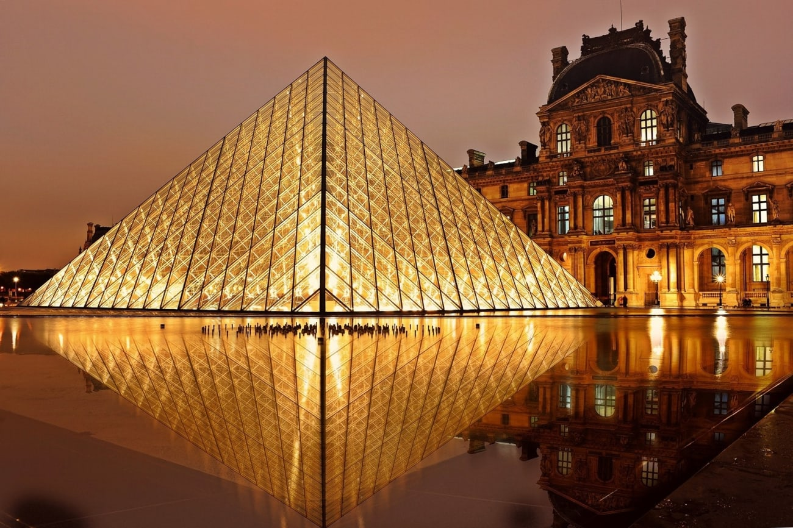
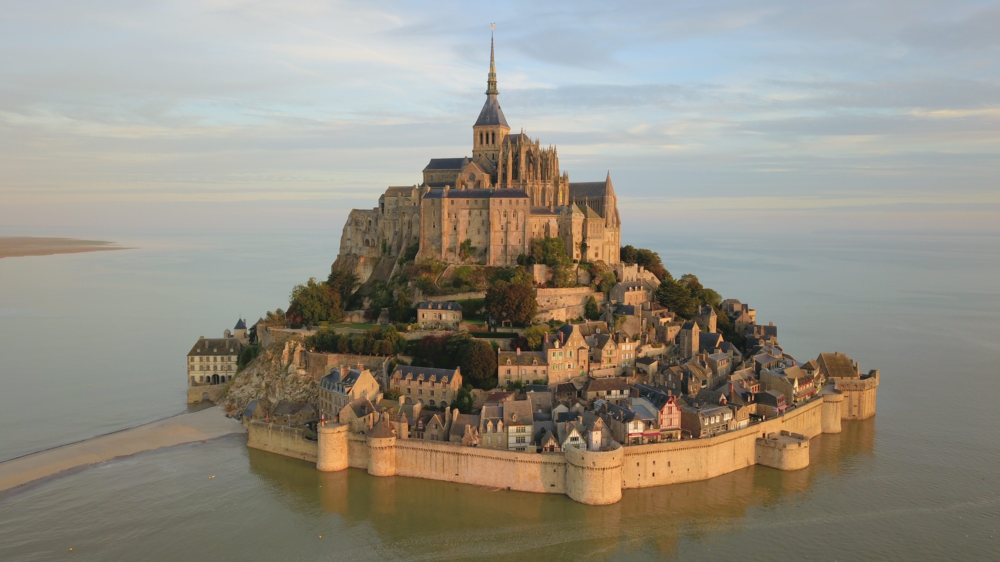

HORIZONTE
Melhores destinos na França
Torre Eiffel e Campo de Marte, Paris
O monumento mais icônico do mundo é o ponto de partida ideal para qualquer viagem à França. Subir na Torre Eiffel oferece uma visão panorâmica inigualável da "Cidade Luz". Ao pé da torre, o Campo de Marte é perfeito para um piquenique clássico francês enquanto se espera pelo espetáculo das luzes que piscam a cada hora durante a noite. É um destino que mistura romance, história e uma arquitetura impressionante.

Museu do Louvre, Paris
Antigo palácio real e hoje o maior museu de arte do mundo, o Louvre é um labirinto de tesouros culturais. Além da famosa Mona Lisa de Leonardo da Vinci, o museu abriga a Vênus de Milo e milhares de obras que atravessam civilizações. Sua pirâmide de vidro no pátio central tornou-se um símbolo da modernidade integrada ao clássico, sendo um dos locais mais fotografados do planeta.

Palácio de Versalhes, Versalhes
Localizado nos arredores de Paris, o Palácio de Versalhes é o símbolo máximo da monarquia absolutista francesa. Seus salões dourados, como a Galeria dos Espelhos, e seus jardins monumentais que parecem não ter fim, mostram a opulência da época de Luís XIV. É um passeio que impressiona pela riqueza de detalhes, fontes dançantes e a grandiosidade da arquitetura barroca francesa.

Monte Saint-Michel, Normandia
Esta abadia medieval construída sobre uma ilha rochosa é um dos cenários mais mágicos da Europa. O que torna o lugar único é o fenômeno das marés: dependendo da hora do dia, o monte fica completamente cercado pelo mar ou por uma vasta planície de areia. Caminhar por suas ruelas estreitas e subir até a abadia no topo é como entrar em um cenário de filme de fantasia.

Dicas de Planejamento: França
- Cultura e Museus:
- Paris Museum Pass: acesso livre a mais de 50 monumentos.
- Reservas antecipadas: obrigatório para a Torre Eiffel e Louvre.
- Segunda-feira: muitos museus fecham neste dia, fique atento!
- Experiências Gastronômicas:
- Boulangeries: procure pelas premiadas para o melhor croissant.
- Cafés de calçada: ideais para observar o movimento de Paris.
- Horários: almoço costuma ser entre 12h e 14h; jantar após as 19h.